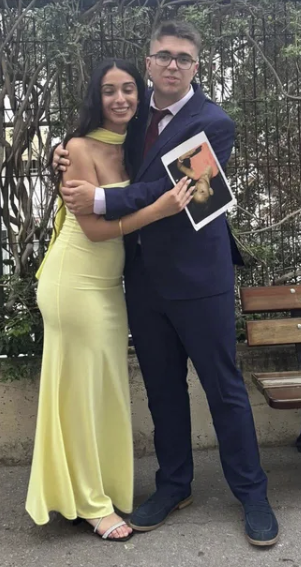
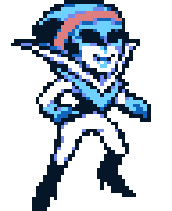

Espero que te guste la currada esta que me estoy pegando a las 3 de la mañana
Bueno pues esta es la segunda carta. Se supone que es la más larga pero no sé cuánto me voy a enrollar. Ya te lo he dicho antes, pero sabes que valoro mucho todo lo que has hecho y haces por mí. Bueno, voy a lío.

Llevamos ya más de un año siendo amigos y la verdad es que han cambiado muchas cosas. Mira todo lo que ha cambiado: en una semana nos vamos para Valencia (bueno yo, pero me pillas) y vamos a hacer la carrera de nuestros sueños, ahora salgo más de fiesta, he decidido abrirme a más gente, y muchas más cosas. Aunque hay que decir que todo no ha sido bueno, hemos pasado un año de mierda con este curso y la verdad es que para mí lo peor ha sido lo de Oreo. Fue muy duro, pero no se puede hacer nada. Todo está cambiando, nuestras vidas ahora van a ser completamente diferentes. ¿Y quieres saber lo que más me asusta? Perder contacto con mis amigos, sobre todo contigo.
Se que hemos tenido nuestras diferencias y que no somos iguales en muchas cosas. Como cuando pasó lo de Moros y Cristianos, que Alex y Roberto fueron a preguntarte eso. He sido un poco ingenuo, pero ya hemos hablado esto, fue una cosa muy rara la verdad y quedé hecho mierda. Y la segunda vez tío, fue peor. Me sentí como un imbécil cuando lo volví a intentar sabiendo que ya me dijiste q no. Yo ya sabía la respuesta, pero no sé.
Se que igual te da pereza todos estos temas, pero al ser tu cumpleaños de lo 18 necesitaba hacer resto.
De todas las personas que he conocido tú has sido la única que me ha dado tanta atención y cariño, aunque no lo creas. Ya sabes que no he tenido la mejor infancia del mundo y el tema de hacer amigos siempre se me ha complicado, pero gracias a ti me he dado cuenta de lo que es tener a alguien que quiere estar contigo y te apoya en todo lo que haces. Es muy bonito, sabes? También el hecho de que hayas jugado a mis cosas, que te hayan gustado y todo eso ya es muchísimo para mí. Yo me daba vergüenza a mí mismo.
El caso es que eres muy buena persona. Ya sé que te dije esto en la otra carta, pero es la verdad. Te mereces mucho más de lo que tienes, aunque si las cosas hubiesen sido diferentes no serías como eres.

¿Sabes qué? Desde hace ya unos pocos meses no paran de decirme que parecemos novios, y no solo digo mis amigos, sino tanto gente de fuera como de dentro de nuestros grupos de amigos. Si te digo la verdad, tienen razón, lo parecemos. Últimamente hemos estado muy apegados, aunque no se si te habrás dado cuenta y, a decir verdad, literalmente hacemos muchas cosas de pareja menos todo el tema de los besitos y los cariñitos. Oye, con esto no quiero decir que no esté a gusto contigo, solo que lo parecemos, aunque ya se tus decisiones y todo lo que piensas. Tú me dijiste que no, pero yo creo que sí que habríamos durado en realidad. Creo que hablar de esto en la carta de tu cumple no es el momento indicado, pero bueno, lo siento.
Ya sabes que estas últimas semanas he tenido problemas con mis amigos y no he quedado tanto con ellos. Si no hubiese sido por ti, habría estado completamente solo estas semanas. Te debo muchísimo Patri, haces q mis días sean mucho mejores
Port último, creo que solo puedo decirte gracias. Gracias por todos estos momentos de felicidad, de apego, de cariños, de coñas, de tonterías, de jugar juntos, de hacer llamada hasta dormirnos, de quedar, de pasarlo mal juntos, de apoyarnos, de incluso de discutir. Solo puedo decirte gracias.